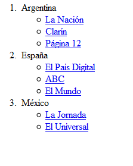

Propósito del sitio
Debido a que actualmente la educación presenta nuevos retos, se propone elaborar un recurso educativo digital para desarrollar competencias y dinamizar estrategias de aprendizaje en relación con los temas Flex Box, Listas y enlaces.
FlexBox

Es una herramienta poderosa para crear diseños con CSS. No es tan poderoso como CSS Grid, pero puede resolver muchos problemas de diseño.
Flexbox es un diseño unidimensional que puede colocar elementos horizontal o verticalmente (pero no ambos).
Un elemento que usa flexbox como diseño se conoce como contenedor flexible, y los elementos dentro de él son elementos flexibles.
Attardi, J. (2020). Flexbox. In Modern CSS (pp. 205-228). Apress, Berkeley, CA.
Listas y enlaces

Las listas
Las listas se emplean para presentar de forma ordenada una serie de líneas.
Éstas pueden ser ordenadas, desordenadas y de definición.
Lista desordenada, ul
ordenada, ol
de definición, dl
Los enlaces
Cualquier elemento de un documento XHTML puede ser definido como enlace.
Por lo tanto, imágenes, párrafos de texto o bloques pueden especificarse como enlaces
a otros puntos del mismo documento o de la red.
Cabello, J. C. O. (2006). Diseño de páginas Web con XHTML, JavaScript y CSS. Grupo Editorial RA-MA.